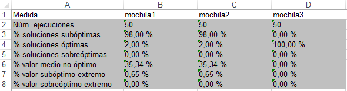

volver
Formato ficheros
Fichero de datos de entrada
Para cargar datos desde un fichero, debera crear un archivo XML, con un contenido similar a éste:
El fichero presenta el siguiente formato, una etiqueta principal <Fichero>, dentro una etiqueta
<Tipos> en la que se indican los tipos de los campos de cada dato, y tantas etiquetas <Tipo>
como tipos tenga la signatura. A continuación, se presenta una etiqueta <ConjuntoDatos>,
dentro de la cual están los datos entre etiquetas <Dato>, con cada campo encerrado entre
<Campo>.
También se pueden cargar datos desde un fichero TXT con un contenido similar a éste:
El fichero presenta el siguiente formato, una línea en la que se indican los tipos de los campos de cada dato,
y tantas líneas como conjuntos de datos se deseen.
Fichero de la tabla Histórica
El fichero de la tabla Histórica presenta un aspecto similar a éste:
En el ejemplo se ven los resultados de tres métodos coloreando en gris los máximos.
La información que provee la tabla es la siguiente:
- Número de ejecución:
Número de ejecución.
- Resultado de la ejecución para cada método:
El nombre de la columna es el del método, y en las celdas se presentan los resultados.
Fichero de la tabla Resultados
El fichero de la tabla Resultado presenta un aspecto similar a éste:

En el ejemplo se ven los resultados de una ejecución de tres métodos.
La información que provee la tabla es la siguiente:
- Métodos:
Nombre de cada método.
- Datos de entrada:
Los datos de entrada para los que se han obtenido los resultados.
- Resultado:
Resultado de ejecución de cada método para los datos dados.
Fichero de la tabla Resumida
El fichero de la tabla Resumida presenta un aspecto similar a éste:
En el ejemplo se ven los resultados comparativos de la ejecución de tres métodos.
La información que provee la tabla es la siguiente:
- Total de ejecuciones:
Número de ejecuciones realizadas.
- Porcentaje de resultados subóptimos de cada método:
Porcentaje de ejecuciones en las que cada método ha dado resultados subóptimos.
- Porcentaje de resultados óptimos de cada método:
Porcentaje de ejecuciones en las que cada método ha dado resultados óptimos.
- Porcentaje de resultados superóptimos de cada método:
Porcentaje de ejecuciones en las que cada método ha dado resultados superóptimos.
- Porcentaje de desviación media de cada método:
Porcentaje de desviación media de los resultados no óptimos de cada método.
- Porcentaje de desviación máxima superóptima de cada método:
Porcentaje de desviación máxima de los resultados superóptimos de cada método.
- Porcentaje de desviación máxima subóptima de cada método:
Porcentaje de desviación máxima de los resultados subóptimos de cada método.
Fichero de todas las tablas
El fichero Excel con todas las tablas contiene cada tabla en una de sus pestañas:
16 de Septiembre de 2016